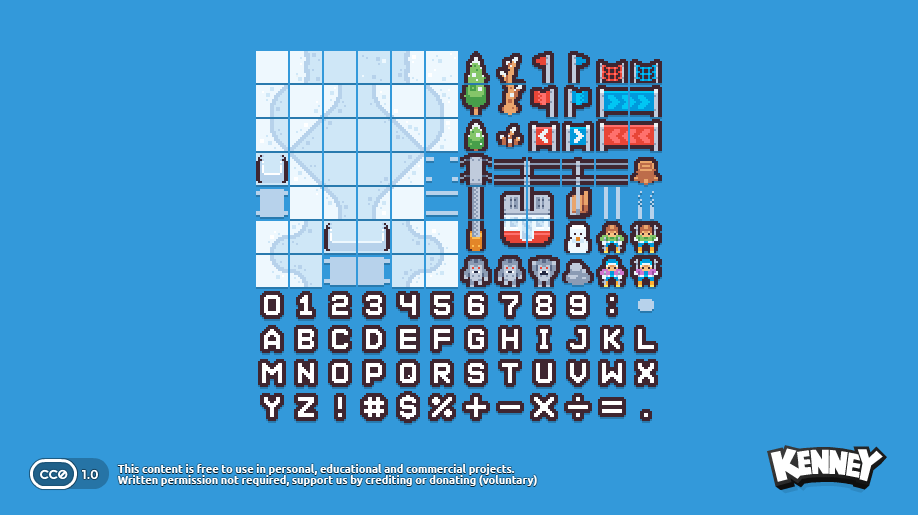

Intro
Have you ever wanted to make a game but didn't know where to start?
Well, today is your lucky day. Because, we're going to offload all
the heavy lifting to a game engine and concentrate on the fun parts.
In this tutorial, we will harness the power of LittleJS; which is super fast, ultra light, easy to grasp and developed by game dev industry veteran KilledByAPixel.
So, let's jump in and get hacking.
What we will be making
To keep things simple here are some criteria to prevent feature creep and overscoping
Kenney.nl provides a wealth of free graphics. This 'Tiny Ski' one caught my eye. We will use this as the basis of a simple sking game where the player whizzes down hill avoiding objects and collecting bonuses.
The setup
All code can be found in this git hub repo.
To follow along you will need to have a basic knowledge of javascript.
Having node and npm installed will also help.
If you don't have them, you can follow
this guide .
Crack open your terminal and clone this repo:
git clone https://github.com/eoinmcg/little-ski little-ski
cd little-ski
npm install
npm run dev
If you don't have git, you can download the zip here.
We now have a local development environment. Navigate to http://localhost:5501/step1.html and you'll see this beauty:
Admittedly, it's not much yet. Let's take a peek under the hood to see what is happening
Step1. Meet LittleJS
Now that the setup is out of the way it's time to roll up our sleeves and take a dive into the code, in step1.html
I've liberally commented the code. Take a minute to read through and see how it works.
File: step1.html
// Step1
'use strict';
// create a simple a object that defines
// some basic settings for our game
const G = {
width: 320, height: 480,
tileSize: 16,
tiles: ['public/ski_tiles.png'],
}
// check for touch controls
touchInputInit();
// called once, when the game is initialized
// set up screen size and camera.
function gameInit() {
// game dimensions stored inside a vector
const gameSize = vec2(G.width, G.height);
setCanvasFixedSize(gameSize);
setCanvasMaxSize(gameSize);
// convert game dimensions to tile size
G.size = vec2(G.width / G.tileSize, G.height / G.tileSize);
// center of the screen
G.center = vec2(G.size.x/2,G.size.y/2)
// position camera in middle of screen
setCameraPos(G.center);
// scale 1:1 with our tilesize (16x16)
cameraScale = G.tileSize;
}
// the following four functions will be called
// each game loop
function gameUpdate() {
// check for stuff like game over condition etc.
}
function gameRender() {
// clear the screen with a white rectangle
drawRect(G.center, G.size, new Color().setHex('#ffffff'));
// draw an image to the screen
drawTile(
G.center, // position (vector)
vec2(2),// size
tile(71, G.tileSize)) // frame and tileSize
}
// called after gameUpdate
function gameUpdatePost() { }
// called after gameRender. Useful for adding UI
function gameRenderPost() { }
// fire up LittleJS with all the necessary functions and tiles(s)
engineInit(
gameInit,
gameUpdate, gameUpdatePost,
gameRender, gameRenderPost,
G.tiles
);
To quickly summarize:
- Lines [6-10] define a basic object containing our game resolution, path to our sprite sheet and the size of each image in the spritesheet (e.g. tile size)
- [17] In the
gameInitfunction we setup screen size and position the camera - [44] In our
gameRenderfunction we clear the screen and draw an image - [60-64] LittleJS is fired by calling
engineInit
On line [51] try changing the frame number from 71 to 69. What do you see?
Imagine our spritesheet (public/ski_tiles.png) divided up into 16x16 cells. This first cell is
frame 0, starting from top left and then moving right. So, our player frame is 70 and the snowman is 69.
Note all coordinates are declared as a vec2
object.
More details on the LittleJS coordinate system
Step 2. Interacting with the player
At the bottom of your code we will add a player class that inherits from the EngineObject class. This means LittleJS will take care of updating, rendering, checking for collisions etc.
class Player extends EngineObject {
constructor() {
super.update(
vec2(G.center), // pos
vec2(2), // size
tile(70, G.tileSize)// frame
);
}
}
// at the bottom of gameInit
G.player = new Player();
We can also remove the drawTile code from gameRender
function gameRender() {
// clear the screen with a white rectangle
drawRect(G.center, G.size, new Color().setHex('#ffffff'));
}
Because our player inherits from EngineObject it's update method will be called every frame. We can hook into this to move our player:
class Player extends EngineObject {
constructor() {
let size = 1.5, frame = 71;
super(
G.center,
vec2(size),
tile(frame, G.tileSize)
);
// edge of screen, left
this.minX = 1;
// edge of screen, right
this.maxX = (G.width / G.tileSize) -1;
// horizontal direction of player
this.dir = 0;
}
update() {
super.update();
console.log(mouseWasPressed(0))
if (mouseWasPressed(0) || keyWasPressed('Space')) {
this.velocity.x = (this.velocity.x === 0)
? .1
: this.velocity.x * -.25;
}
// // gradually increase x speed
if (this.velocity.x !== 0) {
this.velocity.x *= 1.05;
}
// // clamp x speed
this.velocity.x = clamp(this.velocity.x, -.35, .35);
this.angle = -this.velocity.x;
// change direction if player about to go off screen
if (this.pos.x <= this.minX
|| this.pos.x >= this.maxX) {
this.velocity.x *= -1;
}
}
}
Cool! The skiier now changes direction on each click / space press.
Code for this stepStep 3. Tree you later
Next up, we're going to add some trees
for our little hero to avoid. The tree class
is going to be very similar to our Player class.
We want to add a tree object at the bottom of the screen
and move it up the screen, giving the illusion of
movement.
class Tree extends EngineObject {
constructor(game) {
let pos = vec2(
rand(1,game.size.x-1), // random x pos
-2); // just offscreen
let frame = 30;
super(pos, vec2(2), tile(frame, game.tileSize));
this.game = game;
}
update() {
super.update();
this.pos.y += this.game.speed; // move up the screen
// remove object when past top of screen
if (this.pos.y > this.game.size.y) {
super.destroy();
}
}
}
In the gameUpdate function we'll generate new trees at random intervals
function gameUpdate() {
// randomally generate tree
// (lower value results in more trees)
if (Math.random() > .99) {
new Tree(G);
}
}
We'll also set the game speed in gameInit
function gameInit() {
...
G.speed = 0.1;
}
You should now see trees whizzing past the player. Unfortunately, you can ski right through them. Let's fix that.
In the Player class add this line, before the end of the constructor function:
class Player extends EngineObject {
constructor() {
...
this.setCollision(true, true, false, false);
}
And in the Tree class, again, inside the constructor function:
class Tree extends EngineObject {
constructor(game) {
...
this.setCollision(true, false, false, false);
}
Now when playing the game, the player pushes the trees out of the way. What we want is a crash, though!
Because we added the setCollision to our player and tree LittleJS checks these objects for collisions for each frame. We can access this by adding a collideWithObject method to our player class
collideWithObject(o) {
if (this.crashed) return;
G.speed = 0;
this.velocity.x = 0;
this.crashed = true;
}
Also, we don't want the player to respond to input or move post crash. At the top of the Player update method we can just return if they have crashed:
update() {
super.update();
if (this.crashed) return;
...
And display a Game Over message
function gameRenderPost() {
if (G.player.crashed && Math.sin(time * 5) > 0) {
drawTextOverlay('GAME OVER',
vec2(G.size.x/2, G.size.y / 1.5), // position
2, // size
new Color().setHex('#ff0000'), // red color
.5); // outline size
}
You've probably noticed by now that the collision is pretty unforgiving. This can make for an 'unfair' game experience.
Press the Esc when playing to show the debug overlay. You can see now that the tree 'hitboxes' are big. By reducing the size of the hitbox the game will be more forgiving.
We can achieve this by changing the tree size from 2 to something like .5
class Tree extends EngineObject {
constructor(game) {
let pos = vec2(rand(1,game.size.x-1), -2);
let frame = 30;
super(pos,
vec2(.5), // size of tree
tile(frame, game.tileSize));
Ok, but now the trees look tiny!
Let's override the Tree render method and simply draw a bigger tree:
render() {
drawTile( this.pos.add(vec2(0,.5)), vec2(2), tile(30, G.tileSize))
}
Step 4. Bring the bling
So far, we have a functional game but it looks a bit boring.
Let's get to work on fixing that
We can add a two frame animation by repeatedly swapping
the frame.
This is achieved by using the power of sine waves.
update() {
super.update();
// some basic animation
this.currentFrame = (Math.sin(time * 7) > 0)
? this.frame : this.frame + 1;
Now, add a render method to the Player class
drawTile(this.pos, this.size,
tile(this.currentFrame, G.tileSize),
undefined, this.angle);
}
I don't know about you, but that white screen looks kinda bland. Let's add a basic palette to our Game object:
const G = {
...
cols: {
white: new Color().setHex('#ffffff'),
red: new Color().setHex('#ff0000'),
snow: new Color().setHex('#cfe7f7'),
},
And adjust the background color to our new 'snow' color:
function gameRender() {
// clear the screen with a white rectangle
drawRect(G.center, G.size, G.cols.snow);
}
Time for some particles. Particle effects are super easy to implement in LittleJS and there is a handy tool for designing them.
I come up with this effect for when the player crashes.
Just add the standalone function add the very bottom of your code.
const particlesCrash = (pos, game) => {
let col = new Color();
new ParticleEmitter(
pos, 0, // pos, angle
0, .2, 15, 1, // emitSize, emitTime, emitRate, emiteCone
tile(86,16), // tileInfo
game.cols.white, game.cols.snow, // colorStartA, colorStartB
game.cols.white.scale(0,0), game.cols.snow.scale(0,0), // colorEndA, colorEndB
1, 5, 8, 0, 0.01, // time, sizeStart, sizeEnd, speed, angleSpeed
1, 1, 0, 1, // damping, angleDamping, gravityScale, cone
.1, 0.1, 0, 1 // fadeRate, randomness, collide, additive
);
}
We'll invoke this in our collideWithObject method and change the animation frame:
// add to the Player class
collideWithObject(o) {
if (this.crashed) return;
particlesCrash(this.pos, G);
this.frame = 94;
Defintely an improvement. Let's add another effect for when the player changes direction. Again at the bottom of your code add this:
const particlesMove = (pos, angle, game, num = 30) => {
new ParticleEmitter(
vec2(pos.x, pos.y + 1), -angle, // pos, angle
0, .2, num, 1, // emitSize, emitTime, emitRate, emiteCone
tile(107,16), // tileInfo
game.cols.white, game.cols.snow, // colorStartA, colorStartB
game.cols.white.scale(1,0), game.cols.snow.scale(1,0), // colorEndA, colorEndB
1, 1, .5, .1, 0, // time, sizeStart, sizeEnd, speed, angleSpeed
1, 1, 0, 1, // damping, angleDamping, gravityScale, cone
.1, 0, 0, 1 // fadeRate, randomness, collide, additive
);
}
And call it in Player update()
if (mouseWasPressed(0) || keyWasPressed('Space')) {
particlesMove(this.pos, this.angle, G);
this.dir = (this.dir === 0)
? -1 : this.dir *= -1;
}
Step 5. The sound of swoosh
Time for some SFX. We could add some mp3 or ogg files to achieve this but there is a simpler, lighter approach.
Once again, LittleJS has us covered. Check this tool for generating sound effects.
After a bit of experimenting I settled on the following for crash and moving. Add them to the game object:
const G = {
...
sfx: {
ski: new Sound([.25,.5,40,.5,,.2,,11,,,,,,199]),
hit: new Sound([2.1,,156,.01,.01,.3,2,.6,,,,,,1.3,,.2,.14,.45,.01,,150]),
},
Now call it when the player crashes:
collideWithObject(o) {
if (this.crashed) return;
particlesCrash(this.pos, G);
G.sfx.hit.play(this.pos);
And when the player changes direction:
if (mouseWasPressed(0) || keyWasPressed('Space')) {
particlesMove(this.pos, this.angle, G);
G.sfx.ski.play(this.pos);
this.dir = (this.dir === 0)
? -1 : this.dir *= -1;
}
Step 6. Making tracks
Wouldn't it be a bit more realistic if the player left a trail behind them?
We can implement this by tracking the player's position and angle over time. Then we iterate over these positions and draw the trail (frame 58 in our spritesheet).
First, add the trail array and color to the Player constructor method.
this.trail = [];
this.trailCol = new Color(1, 1, 1, 0.25);
Now, keep track of movements at the bottom of the Player update method:
this.trail.push({pos: this.pos.copy(), angle: this.angle});
// remove any entries that are now off screen
this.trail.forEach((t, i) => {
t.pos.y += G.speed;
if (t.pos.y > G.size.y) {
this.trail.splice(i, 1);
}
});
Finally, we just render these at start of the Player render method. This ensures the trail will be drawn underneath the player:
render() {
this.trail.forEach((t) => {
drawTile(t.pos, vec2(2), tile(58, G.tileSize), this.trailCol, t.angle);
});
...
Wait! You probably see some artefacts around the trail. This is because our spritesheet has no gaps between each image. We fix this by adding the following, in our gameInit function:
tileFixBleedScale = .5;
Step 7. Wrapping up
Let's add a simple scoring system, based on distance travelled.
Add a score variable to our game object, in gameInit()
function gameInit() {
...
G.score: 0
}
Now increment it during game update.
function gameUpdate() {
G.score += G.speed / 10;
...
We've already seen how littlejs renders text
but let's use those numbers in our spritesheet.
Here's how it's done:
function gameRenderPost() {
// left pad the score with 0s, so we have 0001 etc
let score = Math.floor(G.score).toString().padStart(4, '0')
// position the score at top center
let startPos = cameraPos.copy().add(vec2(-3,13))
score.split('').forEach((num, index) => {
num = parseInt(num, 10); // cast num as an int so we can add it to the frame
drawTile(
startPos.add(vec2(index * 1.75, 0)),
vec2(2.5), // digit size
tile(96 + num, G.tileSize), // 96 is the frame for 0
);
});
...
Finally, we want players to be able to restart the game after a crash.
The logic for this can be added in the gameUpdate() function
if (G.player.crashed
&& time > G.player.crashed + 2
&& (mouseWasPressed(0) || keyWasPressed('Space'))) {
gameInit();
}
We'll also add this to gameInit() to remove all existing objects. Add it before you create the player object:
function gameInit() {
...
engineObjectsDestroy(); // remove all engine objects
// create our player
G.player = new Player();
G.speed = 0.1;
G.score = 0;
}
Note, that we've added a delay of 2 seconds before the game can be restarted. In order for this to work we need to update the player collision method to store time of collision, rather than just true:
collideWithObject(o) {
...
this.crashed = time;
Taking it further
Phew! In just over 250 lines of html and javascript we've got a playable game. Not bad!
There's obviously still lots of room for improvement. Here are some suggestions:
- Add some collectibles to boost score. There are some tasty treats in the spritesheet like donuts and pizza.
- Add a hiscore system
- How about music?
- And a title screen
Check it this expanded version for some ideas.
That's all for now, folks!